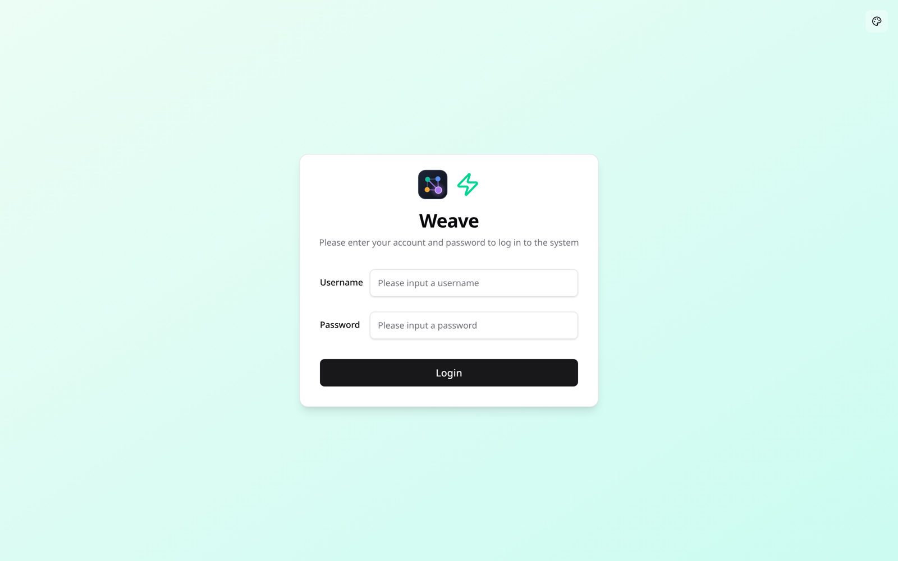
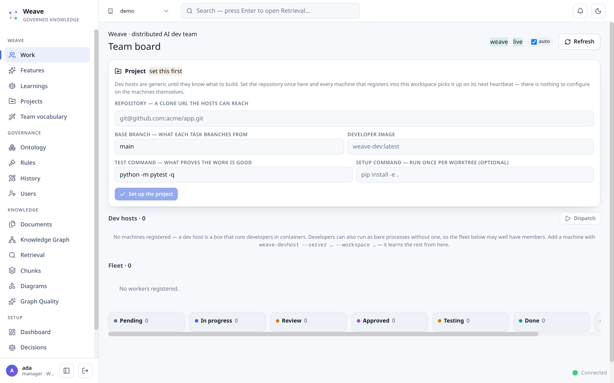
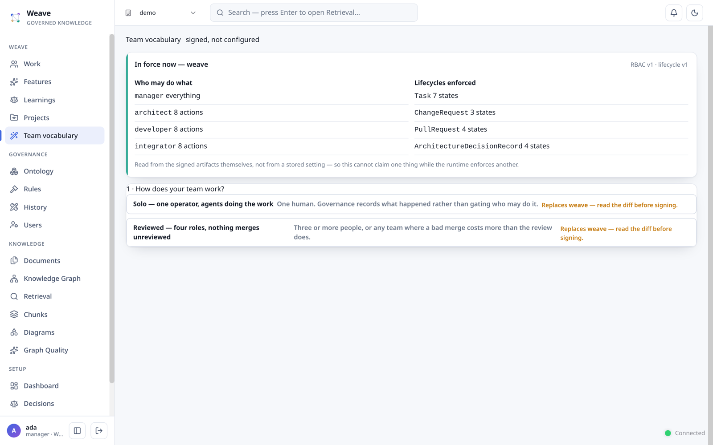
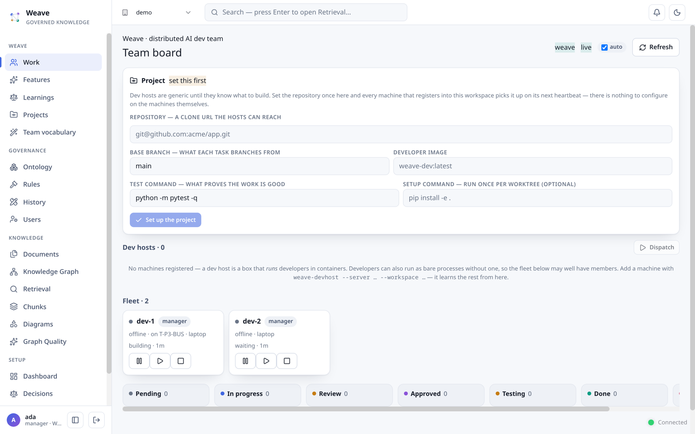
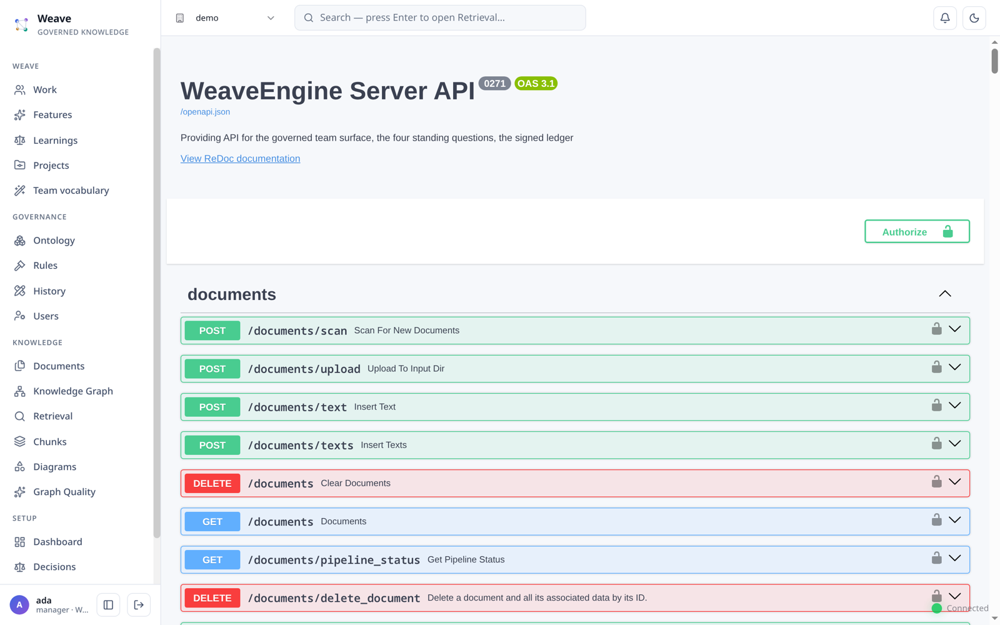

1 · What Weave is
Weave runs a development team in which some members are people and some are autonomous agents, and both are governed the same way. Work is tasks on a board. Every action — claiming a task, approving a review, changing who may do what — passes role permissions, a lifecycle, and a rules engine before it is written. What the team learned is recorded as it happens and is queryable afterwards.
Three ideas explain most of the product.
Every role is a Claude Code session. Humans run it interactively — CLI, desktop app or IDE extension. Dev agents run it headless in a container. Same client, same MCP surface; only the runtime and the identity differ.
Governance is a signed ledger, not a config file. Roles, lifecycles and rules are versions with a signature and a reason. They take effect on the next request, without a restart, and rolling a version back restores the behaviour it replaced.
The hub never dials out. Machines that carry agents register and heartbeat; supervision is state they read back. That is what lets a dev host sit behind NAT or in a private VPC.
2 · Before you start
You need a machine with Python 3.12, conda, git, and — because every Weave role is a Claude Code session — a Claude subscription seat logged in on that machine. Docker is needed only for the containerised deployment in §14 and for running dev agents in containers.
Weave has no API key and cannot be given one. Every role — human and agent — authenticates by subscription seat. The Anthropic SDK is not a dependency, there is no setting that accepts a model key for a Claude Code session, and none is ever passed to one.
So why does the guide mention ANTHROPIC_API_KEY at all? Only because many
machines already have one exported for other work, and Claude Code would otherwise pick it up and
quietly bill the work as metered API usage instead of using the seat. Weave therefore removes
it — along with ANTHROPIC_AUTH_TOKEN, ANTHROPIC_BASE_URL and the Bedrock
and Vertex variables — from the environment every agent runs in, and refuses to start if a metered
backend is forced outright. You do not need to unset anything. It is named here as something
Weave takes away, never as something it needs.
The one place a model credential does exist is the server's own backend, used for building the graph and answering retrieval. That is a different credential, on a different machine boundary, and no Claude Code session ever sees it.
3 · Install
conda env create -f environment.yml conda activate weave pip install -e .
That last line installs weave — the command every step below uses. Every step below uses
it.
Do not skip pip install -e . — it is the step whose absence makes every
later command correct and the whole sequence end at weave: command not found.
Then check the machine:
$ weave doctor claude installed : yes subscription seat: ✓ ok — max via claude.ai (you@example.com) seat token set : no (using the login on this machine) metered vars : ✓ none This machine is ready to carry Weave developers.
doctor separates three failures that otherwise look identical: no seat, a seat with
no subscription, and a metered variable exported in your shell. It reports; it does not
change anything.
4 · Start the server
weave init source ./weave_storage/weave.env weave up --host 0.0.0.0 --port 9800
init creates the working directory and writes weave.env — a fresh
signing secret at mode 0600, plus the two feature flags the server needs. It is not
optional: the server refuses to start on the published default secret, because every token it
issues carries the role permissions are enforced against.
Bind 0.0.0.0 if anyone else will reach this — including your own Claude Code
sessions from another machine. weave up runs in the foreground; Ctrl-C stops it. Under
a process manager, use python3 -m weave.server.app with the same flags.
What you should see, and the parts worth reading:
WeaveEngine log file: ./weave_storage/weave_core.log
╔══════════════════════════════════════════════════════════════╗
║ WeaveEngine Server v0.1.0 ║
║ A governed graph for an AI development team ║
╚══════════════════════════════════════════════════════════════╝
📡 Server Configuration:
├─ Host: 0.0.0.0
├─ Port: 9800
├─ Workers: 1
One worker is the default and it is deliberate. The in-process event bus does not fan out across worker processes, so a client connected to one worker would silently never receive events published on another. If you run more than one worker, you must also switch the event bus to the PostgreSQL adapter — the server refuses the unsafe pairing rather than letting it fail quietly.
Open http://<host>:9800/. The root redirects to the UI.

5 · The first administrator
$ weave user add ada --role manager --workspaces demo Created 'ada' with role 'manager'.
Users are records with hashed passwords and explicit per-workspace membership. There are no environment-variable accounts and no default login.
A workspace is the tenant boundary. Everything below — governance, the project, tasks,
the graph — belongs to one workspace. A user sees only the workspaces they are a member of.
demo above is just a name; use whatever you like.
Two roles that sound alike and are not. admin administers users.
manager and architect direct work — they are the roles allowed to
install governance and define the project. Make your first account a manager unless you
have a reason not to.
And a role change takes effect at the user's next sign-in, because the role travels in the session token. The Users screen says so when you change one.
If you picked the wrong role first, recover with:
weave user promote <name> --role manager
Then sign in again — the new role travels in the next token, not the current one.
6 · Give the team a vocabulary
A new workspace has no governance at all: no object types, no roles, no lifecycles, no rules. Nothing works until you install some. There are two ways, and they are not the same.
From the command line
$ weave roles install --workspace demo --approver ada governance installed into 'demo', signed by ada: ontology → ontology v1 actions → action v1 lifecycle → lifecycle v1 rules → rule v1 rbac → rbac v1 Each layer is a signed ledger version, so it can be rolled back and it says who signed it. The rules layer is enforced from now, not after a restart.
Or from the board
Sign in and the board offers Install governance with the same effect. Either way, five layers land as signed versions.

Seeing what is in force
Team vocabulary opens with what is actually installed — read from the signed artifacts themselves, so it cannot claim one thing while the runtime enforces another.

The wizard's shapes replace the preset. weave roles install lays down the
standard preset (four roles, four lifecycles). The wizard offers Solo — one operator, agents
doing the work — and Reviewed — nothing merges unreviewed. Choosing either replaces
what is installed. That is a real change to who may do what, so the screen shows you a diff and
asks for a reason before it signs.
7 · Say what you are building
On the board, fill in the Project panel: the clone URL your machines can reach, the base branch, the developer image, and the command that proves the work is good.
| Field | What it is for |
|---|---|
| Repository | A clone URL the dev hosts can reach. Every machine that registers picks it up on its next heartbeat — there is nothing to configure on the machines themselves. |
| Base branch | What each task branches from. |
| Test command | What decides whether a task passed. An agent's work is not accepted because it finished; it is accepted because this passed. |
| Setup command | Optional, run once per worktree. |
Only a manager or architect may set this. If you are refused, check the role in the footer beside your name — and remember a role change needs a fresh sign-in.
8 · Attach a machine that carries developers
On the machine that should run agents — a spare box, a laptop, a VM in a private subnet:
python3 -m weave.devhost \ --server http://<server>:9800 \ --workspace demo \ --token <token>
The daemon authenticates as an ordinary Weave identity — --token is not
optional. Without it the daemon starts, confirms the machine's seat, and then loops on
HTTP 401 Unauthorized while holding zero containers. Obtain one by signing in:
curl -s -X POST http://<server>:9800/login \ -d 'username=ada&password=…' | python3 -c 'import sys,json;print(json.load(sys.stdin)["access_token"])'
What a successful start looks like:
INFO: Weave worker: subscription seat 'max' via claude.ai (you@example.com) INFO: Weave worker: subscription auth confirmed; API/Bedrock/Vertex scrubbed INFO: devhost 'guide-host' registered [seat=ok] WARNING: devhost 'guide-host': no project repository configured for workspace 'demo'
That last warning is expected until §7 is done — the machine has joined and has nothing to build yet.
It registers, then heartbeats. Each reply tells it how many developers the team wants running there, and it starts or stops containers until reality matches.
Nothing ever connects to that machine. The server never dials a host or a worker. Supervision is state the host reads back on its next heartbeat. That is precisely what lets it sit behind NAT, on someone's desk, or in a VPC with no inbound access — and it is why there is no "push" anywhere in this product.
Each developer is a container running Claude Code headless in a git worktree. The machine has one subscription seat, provisioned by an interactive login on that box, and the daemon propagates it into every container while scrubbing API-key, Bedrock and Vertex variables on the way in — so a container cannot silently fall back to metered auth.
Scale from the board's Dispatch control, or from the CLI:
weave agents list weave agents up --host <host-id> --count 2 weave agents down --host <host-id>
list shows desired against running per machine; up sets how many
developers a machine should run; down retires them, or takes
--control drain|pause|resume|stop instead of scaling to zero.
Nothing starts immediately. These write intent — the machine reconciles to it on its next heartbeat, because the server never dials out. Expect a few seconds, not an instant.
9 · Watch and steer
The board is the monitoring surface. Tasks move through their lifecycle live; the fleet shows each worker, what it holds, which step of its loop it is in and how long it has been there.

building · 1m — the step and its age. The duration is time in that
step, not time since the last heartbeat, which is what makes it answer “is it stuck?”.A worker's loop is: waiting → claiming → orienting → building → testing →
opening-pr → recording. building is the model doing the work and the only step
usually measured in minutes.
What you can change
| Act | Where | What actually happens |
|---|---|---|
| Approve a task | Board, task drawer | A governed lifecycle transition. Refused if your role may not make it — and the refusal appears under the button. |
| Pause / stop a worker | Fleet | Written as the worker's control state; honoured between steps, so it never stops mid-commit. |
| Scale a machine | Dispatch, or weave agents | Sets desired_workers. The host reconciles on its next heartbeat. |
Weave shows you the artifact trail, not the conversation. You see what an agent produced — commits, the pull request, reviews, what it learned — and which step it is on. You do not see it thinking, and there is no transcript view. If you are used to watching an agent work in a terminal, this is the difference, and it is deliberate: at ten agents, reading ten transcripts is not supervision.
Nobody assigns work
The daemon decides how many developers run on a machine. It does not decide what any of them works on: each worker claims its own task from the ready queue, and exactly one claimant wins. Dispatch offers work by ordering a queue; it never hands a task to a worker. No model sits in that path — the coordination is deterministic graph logic.
10 · Working the methodology through Weave
The house methodology produces artifacts in a fixed order — BLOG → RFC ↔ DRP → CONSTRAINTS → ARCHITECTURE / CR → WORK PLAN → milestone reviews. Weave is where the team's answers live. This chapter is how the two meet.
Connecting a manager or architect session
There is no Weave client to install. A role's kit is the client configuration:
$ weave roles kit --role manager --workspace demo --out ./manager-seat kit for 'manager' in workspace 'demo' → ./manager-seat written .mcp.json written CLAUDE.md Point a Claude Code session at ./manager-seat and start it.
.mcp.json points Claude Code at the server's /mcp endpoint with the
workspace header. CLAUDE.md carries that role's loop, the methodology skills it should
author with, and the governed actions it may invoke. Start Claude Code in that directory and the
session is the manager seat. The same command with --role architect produces the
architect's.
What the surface actually is
Nineteen MCP tools, and they fall into five jobs. This is the whole of how a human role works with Weave — there is no other API for it.
| Job | Tools | What it is for |
|---|---|---|
| Ask the four questions | ask_changes ask_why ask_features ask_learnings |
The standing questions, answered as nodes you can cite and resolve — not prose. Identical through REST, the UI and MCP, because one handler serves all three. |
| Search what was ingested | query_auto (the default) query_knowledge_graph query_cgr3 query_data |
Retrieval over the documents in the workspace. query_data returns structure without a synthesised answer. |
| Decision memory | search_precedents list_decisions get_edge_context get_entity_context record_decision |
Why the shape is what it is. search_precedents is the one to reach for before a design call — it finds past decisions similar to the situation in front of you. |
| Do governed work | get_manifest then invoke_action |
See below — this pair is the most important idea on the page. |
| Shared pictures | list_diagrams get_diagram save_diagram |
One diagram set per workspace: the picture you read is the picture your teammates read. Read before you draw — revise the existing id rather than starting a second picture of the same thing. |
There is no tool per action, and that is the design. get_manifest tells you
what your role may do right now, filtered by the RBAC in force; invoke_action
performs any of them, validating arguments, checking permissions, checking the lifecycle and running
the rules before anything is written.
So changing who may do what takes effect without updating any client — the manifest simply answers differently on the next call. It is also the answer to "how do I know Weave has what I need for this stage?": ask the manifest. A capability you cannot see is one your role does not have, not one that is missing.
Getting the artifacts in
An artifact is a file in docs/ and a node in the graph, joined by a locator —
repo · path · rev. Weave never stores a copy of the document; it stores a reference that
resolves to the real file at a real revision, which is why a citation cannot rot silently.
Ingest a document so it becomes retrievable:
POST /documents/text { "text": "…", "file_source": "docs/WEAVE_DRP.md" }
Two things to know, because both are silent.
Nothing uploads automatically. There is no watcher and no hook. The manager's kit instructs the session to ingest as step 3 of its loop — if a session skips it, nothing notices, and a plan can be published over a graph that does not contain the document it was derived from.
The response is acceptance, not completion. POST /documents/text answers
status: success with a track_id the moment the text is received; processing
happens afterwards and can fail. Check GET /documents for the outcome rather than
trusting the 200.
Both are addressed by CR-002 (proposed): it adds a sync command and makes publishing a plan
refuse when a document it references is not there. Until that ships, ingesting is a step you
have to remember — and checking GET /documents afterwards is how you know it worked.
Checking that the information is actually there
| Question | How to answer it |
|---|---|
| What may my role do at this stage? | get_manifest — RBAC-filtered, live. |
| Do the citations still resolve? | python scripts/check_locators.py --workspace demo. Exit 0 clean, 1 dangling, 2 could not run — the three are distinct so a scheduled check can tell nothing is broken from I could not look. |
| What has the team already decided about this? | search_precedents, before you decide it again. |
| Is the artifact for this stage present at all? | Nothing answers this today. check_locators finds references that broke, not ones that were never made. This is exactly what CR-002 exists to close. |
What the developer sees
When a dev agent claims a task it fetches a brief: the task, the change request it serves, its
dependencies, the files it touches, and precedent — prior decisions semantically
similar to this task. That last field is the orient step, and it is only as good as what was ingested.
So the chain the methodology depends on is: author in docs/ → ingest → the plan
references it → a task inherits it → the agent orients on it → what it learns is recorded back.
Every link exists today. The first one is the one nothing enforces yet.
11 · The four roles
Admin
Creates and administers accounts and workspace membership. Note this is not a governance role: administering people is separate from directing work.
Manager
Installs governance, defines the project, steers the fleet, approves work. The role to start with.
Architect
Approves and merges. In the Reviewed shape, nothing reaches approved without one.
Developer
Claims tasks, commits, opens pull requests, records decisions. This is the role dev agents hold — and a human developer holds exactly the same one.
Every one of these is an ordinary Claude Code session pointed at the server's MCP endpoint. There is no separate client to install for humans, and no separate surface for agents.
12 · The API and MCP
The API tab serves the full OpenAPI documentation from the server itself — no internet required, which matters for an air-gapped install.

Agents and human sessions speak the same surface over HTTP at /mcp. Each of the four
standing questions — what changed, why, what features exist, what did we
learn — is served by one handler shared by REST, the UI and MCP, so the human and agent answers
cannot drift apart.
If the server's model backend is a local one
The server has its own model backend, and it is the only place in Weave a model credential exists. Point it at a hosted API and there is nothing more to do. Point it at a local runtime and two settings decide whether ingestion works at all — both present as bugs rather than as configuration, which is why they are here and not in a tuning appendix.
Keep the model resident. With a runtime that unloads between calls, every chunk pays the
cold start again — measured at about 15 s per chunk, with extraction dying on
httpx.ReadTimeout before finishing a single document. Pin the model (ollama:
keep_alive) and give the server room:
export WEAVE_TIMEOUT=600
With the model pinned and that timeout, the same document processed in about a minute. The symptom is a timeout, so it reads as a Weave defect. It is not.
Give the embedding backend a batch that fits a chunk. llama.cpp defaults to a 512-token physical batch and Weave's chunks reach ~1500, so every embedding call returns 500:
--batch-size 8192 --ubatch-size 8192
The error names the cause exactly — in the model server's log, not Weave's, which is the only reason it is hard to find.
13 · Upgrading an existing install
weave migrate reviews --workspace demo --dry-run weave migrate reviews --workspace demo weave migrate reviews --workspace demo --verify
Reviews and learnings were once list fields on a task record. They are nodes now, so they can be traversed and cited. Run the dry run first — the number it prints is the number a real run creates. Running it twice is safe.
New installations do not need this. Recording a review or a learning creates the node directly. The migration exists for workspaces that predate that.
14 · Docker
The bundle in deploy/ raises the server and its databases together. It needs three
secrets, none of which has a default:
cd deploy export WEAVE_TOKEN_SECRET="$(python -c 'import secrets; print(secrets.token_urlsafe(48))')" export WEAVE_POSTGRES_PASSWORD=... export WEAVE_NEO4J_PASSWORD=... docker compose up -d --build
The database image is built from deploy/postgres.Dockerfile, not pulled.
Weave's PostgreSQL graph storage needs both the age and vector
extensions in one database, and no published image ships both — so the bundle builds one.
Then curl http://localhost:9800/health and continue from
§5: create the first administrator with weave user add inside the
server container, install governance, and carry on.
Quadruple mode and PostgreSQL are refused together. The decisions and
communities vector stores have no tables in the PostgreSQL adapter yet, so the server
refuses that pairing at startup, naming the two ways out, rather than failing at first use.
Set WEAVE_ENABLE_QUADRUPLE=false, or point WEAVE_VECTOR_STORAGE at
NanoVectorDBStorage.
15 · When something is wrong
| What you see | What it means |
|---|---|
weave: command not found | pip install -e . was skipped, or the conda environment is not active. |
The server refuses to start, naming WEAVE_TOKEN_SECRET | You did not source weave.env. The server will not run on the published default secret. |
| Weave is unavailable on the board | The server was started without the Weave flags. weave init writes both into weave.env; if you started the server by hand, set WEAVE_ENABLE_TEAM=true and WEAVE_ENABLE_QUADRUPLE=true. |
| This workspace has no governance yet | Expected on a new workspace. Press Install governance, or run weave roles install. |
| A button does nothing | It should not — every control that will not act says why, and every refusal appears where you clicked. If you find one that is silent, that is a defect worth reporting. |
| You created a user and cannot sign in | Check the CLI and the server are using the same working directory. Sourcing weave.env sets WEAVE_WORKING_DIR for both. |
| The board is empty and nothing moves | Run weave doctor on the dev host — a machine with no seat cannot do any work at all. |
A host shows desired 3 · running 0 | The daemon is not heartbeating. Check it can reach the server; nothing reaches in to tell you. |
| A permissions change did nothing | It is a signed ledger version — check History for it. If there is no version, it was written outside the ledger, and that is a bug rather than a setting. |
| Every task “fails its tests” | The test command may not exist on that host. The worker halts loudly rather than recording a false learning about your code. |
| Ingestion times out on a local model | The model is unloading between calls — pin it and raise WEAVE_TIMEOUT. See §4. |
| Every embedding call returns 500 | The embedding server's batch is smaller than a chunk. Read its log, not Weave's. See §4. |
| An agent finished but nothing merged | By design. Dev agents hold no git credentials and cannot merge — the output of a run is a branch and a pull request. |
Everything in this guide was run before it was written. The commands are transcripts, the screenshots are of a real installation, and where a path is not yet available the guide says so instead of describing it. If a step here does not work on your machine, that is a defect in Weave or in this document — not something you are expected to work around.